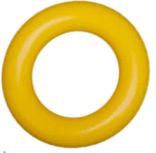

Estrena lo que quieres,
págalo por quincenas
Tu cupo de crédito 100% digital para comprar moda, calzado, viajes y más en tiendas físicas, en línea o por WhatsApp.
¿Ya tienes Quac?Paga tu cuota Descarga la app

¿Qué es Quac?
Quac es tu amigo en el mundo del crédito: un cupo para estrenar sin historial crediticio, sin cuota inicial y sin cuota de manejo. Lo pides 100% digital y lo usas en moda, calzado, viajes y mucho más, ¡en cuotas quincenales!
Nuestra promesa: comprar fácil, pagar a tiempo y ganar por hacerlo. Con Quac+, cada compra y cada pago puntual suman Quacs.
Todo, desde la app
Conoce la app¿Cómo funciona?
Cuatro pasos, sin filas ni papeleo eterno, te separan de tu próxima compra. Lo pides desde el celular y, cuando te aprueben, lo manejas todo desde la app.
-
Paso 01
Pide tu
cupoEntra a preaprobado.quac.co y llena un formulario rápido, o solicítalo en cualquiera de nuestros comercios aliados.
-
Paso 02
Registra tus
datosSolo necesitas tu cédula, un correo electrónico y una línea móvil a tu nombre. Todo 100% digital.
-
Paso 03
Recibe tu
respuestaEstudiamos tu solicitud rápido y de forma segura: en máximo 1 día hábil tienes respuesta. Un asesor te llamará, ¡ten el celular a mano!
-
Paso 04
Activa y
estrenaDescarga la app, activa tu cupo y aprueba cada compra con tu clave dinámica: en tienda, en línea o por WhatsApp.
-
Meta
¿Listo para
Solicita tu cupo
estrenar?
Beneficios Quac
Pensado para que estrenar sea fácil desde tu primera compra, aunque nunca hayas tenido un crédito.
Sin historial crediticio
¿Nunca has tenido un crédito? No importa: con Quac empiezas a construir tu historia.
Respuesta rápida
Lo solicitas online con un formulario rápido y en máximo 1 día hábil tienes respuesta.
Pagos quincenales
Cuotas fáciles que van al ritmo de tu quincena. Págalas desde la app, el portal de pagos o en tienda.
Cuota de manejo gratis
Tener tu cupo no te cuesta una cuota de manejo: no te la cobramos.
Sin cuota inicial
Haz tu pedido sin pagar nada al comprar y empieza a pagarlo en 15 días.
Marcas exclusivas
Más de 30 marcas de moda, calzado y viajes en nuestros comercios aliados.
Quac+ · Programa de beneficios
Estrenar tiene niveles.
Gana Quacs al comprar y al pagar a tiempo, sube de nivel y desbloquea descuentos, envíos gratis y más cuotas. Sin inscripción: si tienes cupo, ya estás dentro.
15.000 Quacs · 12.000 – 19.999 Quacs
1 Quac por cada $1.000 en compras3 Quacs por cada $1.000 pagado a tiempo
Conoce Quac+Comercios aliados
Usa tu cupo en más de 30 marcas de moda, calzado y viajes. Visita sus tiendas, compra en su sitio web o pide por WhatsApp.
+120tiendas físicas
en 9 ciudades
Compra como prefieras
En tienda física
Di que pagarás con tu cupo Quac, aprueba en la app, elige tus cuotas y listo.
En línea
Elige Quac como medio de pago, completa tus datos y aprueba la compra.
Por WhatsApp
Recibe el link del asesor, revisa los datos y aprueba.
Tiendas físicas en Armenia · Barrancabermeja · Barranquilla · Bogotá · Bucaramanga · Manizales · Pereira · Valledupar · Villavicencio
Ayuda
Preguntas
frecuentes
Lo que más nos preguntan sobre tu cupo, tus compras y tus pagos.
¿No encuentras tu respuesta?
Escríbenos y te ayudamos.
WhatsApp 312 460 5748 O llámanos al 607 7000225 · Lunes a viernes 8:00 am a 6:30 pm · Sábados 8:30 am a 5:30 pmLo quiero y con Quac ¡Lo tengo!
Pide tu cupo 100% digital y ten respuesta en máximo 1 día hábil.
¡Descarga la app!
Revisa tu cupo disponible, paga tus cuotas, aprueba cada compra con tu clave dinámica y sigue tus Quacs. Todo desde el celular.
¿Estás en tu computador?Escanea con la cámara de tu celular